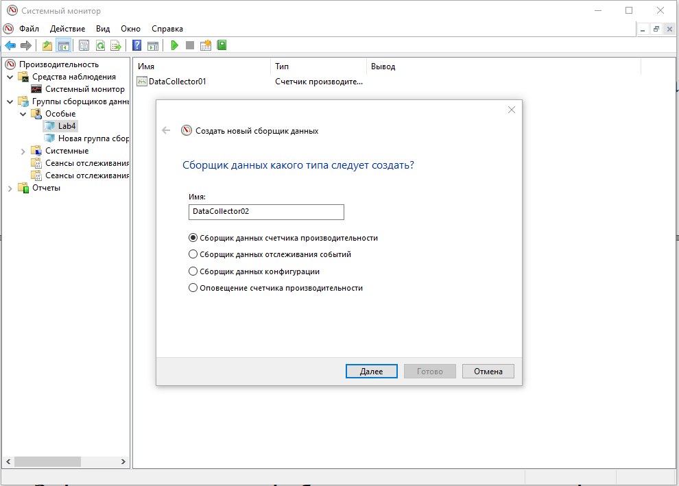
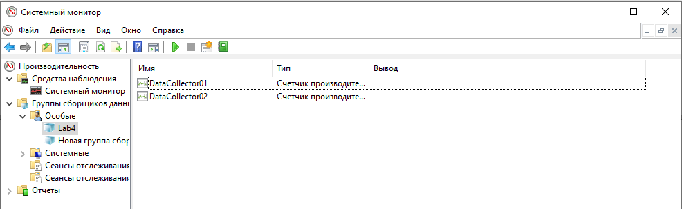
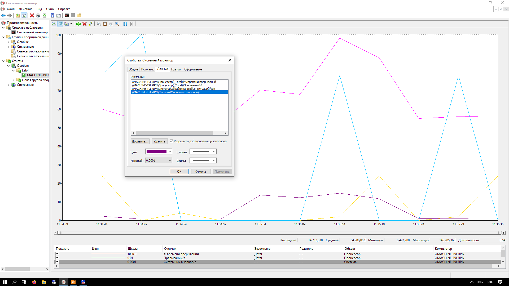

ЛР4: Дослідження продуктивності роботи операційної системи Windows
У даній роботі ми дослідили продуктивність роботи операційної системи Windows за допомогою застосунку Performance Monitor. Ми дослідили завантаження системи як без взаємодії з процесами користувача, так і при взаємодії.

Рис.2.1 – Додавання нового колектору

Рис.2.3 – Два колектори у групі

Рис.3.3 - Графік лічильників другого колектора (стан переривань)